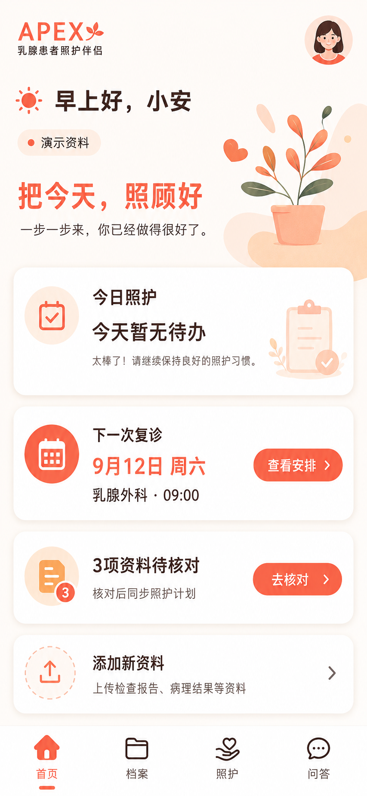
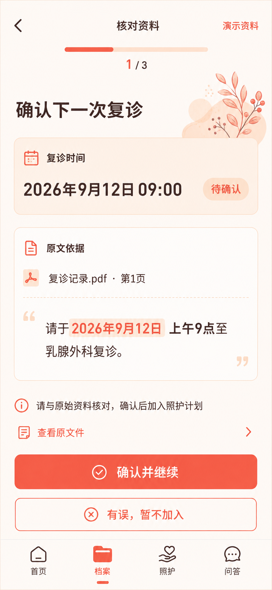
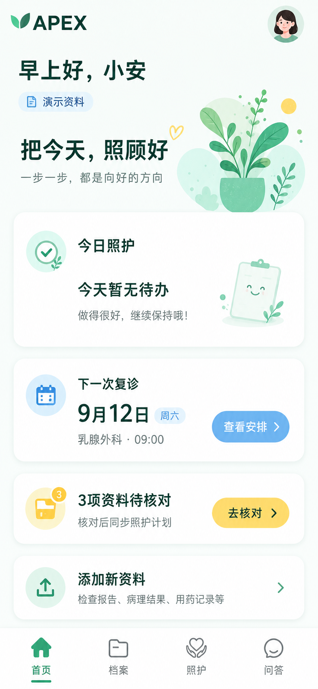
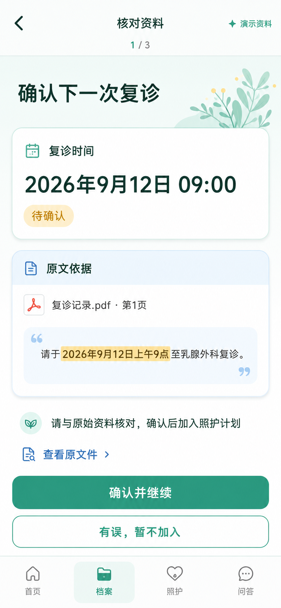
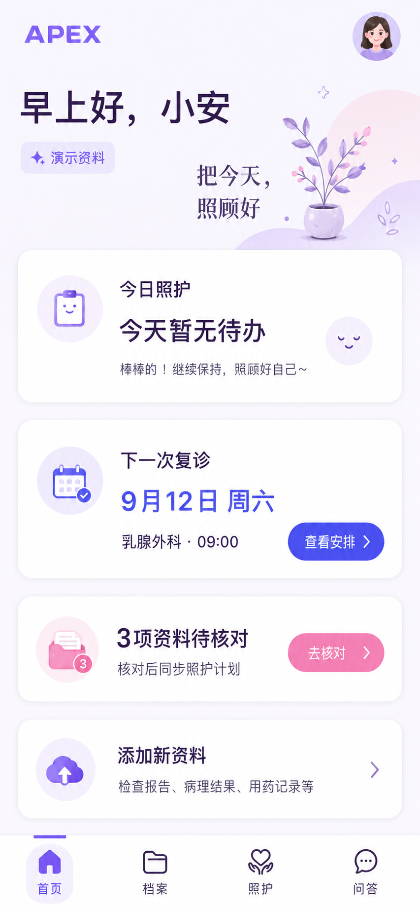
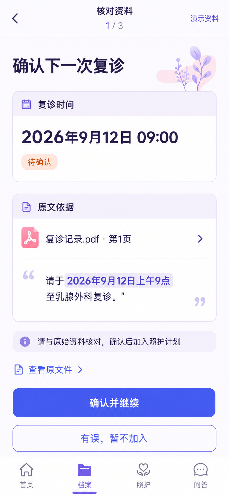

患者端 · 手机网页优先。三种年轻活泼的视觉方向，同一组虚构资料、同一条照护流程。点击图片可放大查看。
本轮选择视觉方向，尚未改造业务应用。选定后细化布局、无障碍对比度、完整交互与技术实施方案。


适合强调陪伴感。定稿需区分珊瑚品牌色与警示色，减少首屏装饰。


适合兼顾活泼与医疗产品的清晰感。定稿需加深浅蓝按钮，统一原文字号。


适合更鲜明的年轻品牌。定稿需统一字体和图标，并调整浅粉按钮对比度。
第一眼的亲切感 · 日期与原文是否好读 · 下一步是否清晰 · 是否适合长期使用
三套均会压缩欢迎区域；将“暂无待办”改为“暂无已确认安排”，避免被理解为无需照护；删除模型补出的夸赞文案。
请在当前对话回复 A、B 或 C；也可以指定组合，例如“B 的布局 + C 的配色”。